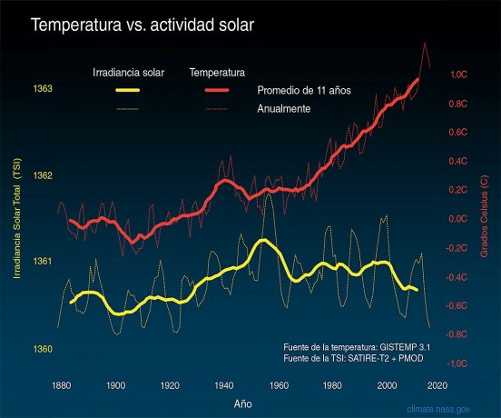

Cambio Climático
Guía del cambio climático: Toda la información que tenés que saber
6 de Abril, 2020

El cambio climático está aquí con sus eventos meteorológicos extremos que ponen en peligro el futuro del mundo tal cual lo conocemos. ¿Cuáles son sus evidencias? ¿Qué debemos saber? ¿Estamos preparados? En esta sección, cada semana, noticias, conceptos básicos, personalidades destacadas y datos necesarios para comprender el fenómeno.
El cambio climático y el aumento del nivel de los océanos podrían hacer desaparecer la mitad de las playas de arena en el mundo de aquí a 2100.
De acuerdo a un estudio publicado en la revista Nature Climate Change, aunque logremos reducir las emisiones de gases de efecto invernadero, más de un tercio de los litorales de arena seguirán amenazados.
Además del gran impacto sobre el turismo, como suelen ser el primer mecanismo de protección contra las tormentas e inundaciones los fenómenos climáticos extremos se sentirán mucho más fuerte. El dato: Argentina estará entre los países más afectados.
Wallace Smith Broecker es conocido como el padre del cambio climático. El científico estadounidense fue quien habló primero del “calentamiento global pronunciado" que estaba sufriendo nuestro planeta en un un artículo para la revista Science de 1975 al que tituló “Cambio Climático”.
Muchos años después, dijo que no lo sorprendió la viralización del término que acuñó. "Era una elección obvia", explicó en diálogo con Ámbito.
Autor de más de 500 artículos, obtuvo la medalla nacional de ciencia del gobierno de su país por sus hallazgos, que revelaron, por ejemplo, cómo el océano absorbe los gases contaminantes de la atmósfera o de qué manera el clima de nuestro planeta puede cambiar de forma abrupta en cortos períodos de tiempo.
Su propuesta para luchar contra el fenómeno se comprobó que funcionaba: secuestrar y almacenar el carbono bajo la superficie terrestre. Pero advertía sobre la urgencia: "¡El problema se escapa más y más y nosotros nos movemos a paso de tortuga!". Murió en febrero de 2019.
El gráfico de la agencia espacial estadounidense (NASA) compara los cambios en la temperatura de la superficie global (línea roja) y la energía del sol que recibe la Tierra (línea amarilla) desde 1880.
Las líneas más delgadas muestran los niveles anuales y las líneas más gruesas exhiben las tendencias promedio de 11 años (el ciclo solar natural).
La cantidad de energía que recibió la Tierra siguió los pequeños ascensos y descensos el ciclo solar natural, sin un incremento neto desde la década de 1950. Sin embargo, durante el mismo período la temperatura global aumentó notablemente. Conclusión: es extremadamente improbable que el sol haya causado la tendencia al calentamiento global observada durante el último medio siglo.
"Es lo que usan los científicos para medir la pérdida de hielo de las capas de hielo más grandes de la Tierra en Groenlandia y la Antártida. Este peso es equivalente a más de 100 millones de elefantes o 6 millones de ballenas azules",
Eddie Vedder